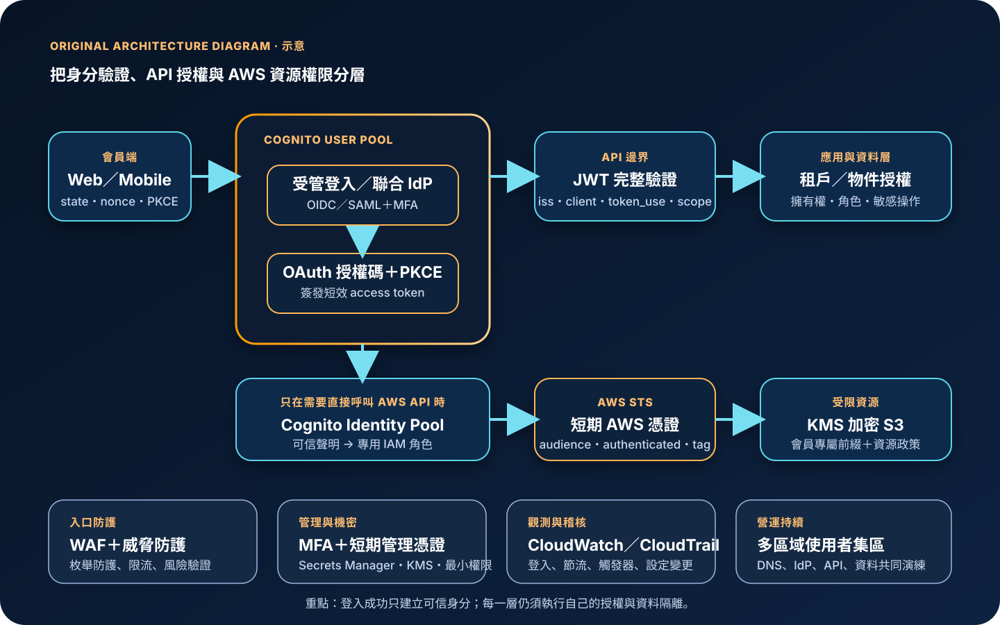

Amazon Cognito：使用者身分驗證、權杖與安全治理
Amazon Cognito 是面向 Web 與行動應用的身分平台，可建立使用者目錄、處理登入與聯合身分、簽發 OAuth 2.0／OpenID Connect 權杖，或把已驗證身分交換為短期 AWS 憑證。它能降低自建身分系統的負擔，但不會替應用完成授權規則、JWT 驗證、資料分級、帳號復原治理或跨區切換決策。
作者：Dr. William｜查閱與發布：2026-09-25
服務定位
Amazon Cognito 位於終端使用者、外部身分提供者與應用後端之間。使用者集區（user pool）負責註冊、登入、使用者目錄、聯合登入及 JWT 簽發；身分集區（identity pool）接受可信身分聲明，再透過 AWS Security Token Service 提供有時效的 AWS 憑證。兩者可以單獨使用，也能串接成「先驗證使用者，再授權存取 AWS 資源」的流程。
Cognito 不是員工 IAM Identity Center 的替代品，也不是應用資料庫中的業務授權引擎。JWT 證明身分與核發範圍，不代表使用者必然能讀取某一筆訂單、病歷或租戶資料；物件層級授權、租戶隔離、資料擁有權及高風險操作再驗證，仍須由 API 與資料層執行。
核心概念與適用邊界
主要元件
- 使用者集區：保存本機或聯合使用者資料，提供註冊、登入、帳號確認、復原、MFA、受管登入頁面及 OAuth 2.0／OIDC 授權伺服器。
- 應用程式用戶端：為每個 Web、行動、伺服器或機器對機器應用定義允許的登入流程、回呼網址、登出網址、IdP、scope、屬性權限及權杖生命週期。
- ID、Access 與 Refresh Token：ID token 傳遞身分聲明；access token 以 scope 表達 API 權限；refresh token 用於取得新權杖。API 不應把 ID token 當成 access token。
- 身分集區：將 user pool、SAML、OIDC、社群或自訂身分映射到 IAM 角色，以 STS 短期憑證授權 S3、DynamoDB 等 AWS API。
- 聯合登入：使用者集區可作為 SAML／OIDC／社群 IdP 的服務提供者，將外部聲明轉為一致的 Cognito 權杖。
- 觸發器與威脅防護：Lambda 觸發器可自訂註冊、遷移、驗證與權杖；適用方案可使用風險偵測、受損憑證檢查及適應式驗證。
邊界與依賴
- 使用者集區與身分集區用途不同；只有需要讓終端使用者直接呼叫 AWS API 時，才通常需要身分集區。
- 瀏覽器與行動應用屬公開用戶端，無法安全保存 client secret；應採授權碼流程搭配 PKCE，而非把秘密嵌入前端。
- Cognito 簽發 JWT，但每個 API 仍須驗證簽章、issuer、client／audience、token_use、有效期與必要 scope。
- 聯合使用者的驗證強度與 MFA 主要由外部 IdP 控制；Cognito 不會替第三方 IdP 補做本機 MFA。
- 使用者目錄、網域、IdP、回呼網址、郵件／簡訊服務、WAF、Lambda 觸發器、KMS 與應用資料共同構成端對端登入服務。
- 配額依帳號、區域、操作分類、網域或單一使用者計算；流量尖峰與惡意註冊可能造成節流及額外費用。
適合與不適合的使用情境
適合
- 消費者或合作夥伴 Web／行動應用需要註冊、登入、帳號確認、復原、MFA 與聯合登入。
- API 需要以 OAuth 2.0 scope 與可驗證 JWT 授權，並希望使用受管的 OIDC 相容身分服務。
- 需要讓已登入使用者取得權限受限、時間短暫的 AWS 憑證，直接存取限定的 S3 或其他 AWS 資源。
- 需要整合既有 SAML、OIDC 或社群身分來源，同時讓後端接收一致的 Cognito 權杖格式。
- 需要多區域使用者集區複寫，以支援登入基礎設施的營運持續與災難復原。
不適合或不能單獨完成
- 主要需求是 AWS 員工與工作負載管理、組織帳號登入或管理控制台單一登入時。
- 只需要固定少量服務帳號，且沒有終端使用者目錄、OAuth、聯合登入或自助復原需求時。
- 應用要求複雜的資料列、物件或租戶層級授權，卻沒有在後端另建政策與資料邊界時。
- 法規或商業需求要求 Cognito 未支援的驗證器、資料駐留、客製協定或完整目錄管理能力時。
- 希望單靠身分服務避免釣魚、工作階段竊取、業務邏輯濫用或已登入帳號的惡意操作時。
示意故事案例：會員文件入口的受控登入
以下為示意案例，不代表特定企業或正式部署。 一個會員文件入口使用 Cognito 使用者集區提供受管登入與企業 OIDC 聯合登入。瀏覽器採授權碼流程與 PKCE，回呼網址只允許正式 HTTPS 網域。使用者完成 MFA 後取得短效 access token；API Gateway 與後端驗證 JWT 簽章、issuer、app client、token_use、到期時間與 scope，再依會員識別、租戶及文件擁有權做資料層授權。
只有需要直接上傳大型檔案的流程才使用身分集區。身分集區依已驗證聲明選擇專用 IAM 角色，簽發短期 STS 憑證；角色只允許寫入該會員的隔離 S3 前綴，並以 bucket policy、KMS key policy 及物件擁有權形成多層限制。管理人員透過聯合登入、MFA 與短期管理憑證維護 Cognito 設定，不使用長期 IAM 使用者金鑰。CloudTrail 稽核設定與管理 API，CloudWatch 監控登入錯誤、節流、Lambda 觸發器與 WAF；多區域使用者集區搭配健康檢查及復原手冊處理主要區域中斷。

建置與運作流程
- 定義身分與信任邊界：區分消費者、合作夥伴、管理者與機器身分，列出本機帳號、企業 IdP、社群 IdP、租戶與資料擁有權。
- 選擇元件：只需要應用登入與 API JWT 時建立使用者集區；只有終端使用者需要直接呼叫 AWS API 時才增加身分集區。
- 建立使用者集區：選擇不可變更或難以變更的登入別名、大小寫、必要屬性與自訂屬性；啟用刪除保護並以基礎設施即程式碼保存設定。
- 建立分離的 app client：瀏覽器、行動、伺服器與機器對機器各自使用獨立用戶端，縮限 IdP、grant type、scope、屬性讀寫、回呼與登出網址。
- 保護 OAuth 流程：公開用戶端使用授權碼與 PKCE，產生並驗證 state、nonce；回呼網址精確列舉，不使用萬用字元或不受控轉址。
- 設定驗證強度：高風險使用者與管理操作要求 MFA；優先採抗攔截能力較高的因素，評估帳號復原流程、簡訊／郵件依賴與社交工程風險。
- 整合聯合身分：驗證 IdP issuer、簽章、audience、憑證輪替與屬性映射；避免外部可任意修改的聲明直接成為高權限群組或 IAM 角色依據。
- 實作 API 權杖驗證：使用成熟函式庫快取並輪替 JWKS，檢查簽章、kid、issuer、client／audience、token_use、exp、scope 及應用所需聲明。
- 建立應用授權：在 API 與資料層依租戶、物件擁有權、角色及操作風險再次授權；不能只相信前端隱藏按鈕或 JWT 中的顯示資訊。
- 如需 AWS 存取，限制身分集區：停用不必要的訪客身分；以角色信任政策、audience、authenticated 條件、principal tag 與資源政策縮限短期憑證。
- 保護資料與設定：敏感設定放入 Secrets Manager 或 Parameter Store；確認服務端靜態加密邊界，使用自訂寄件者觸發器或多區域功能時審查客戶管理 KMS key，並限制 Lambda 與郵件／簡訊角色。
- 啟用防護與觀測：關閉使用者存在性洩漏、評估 WAF 與威脅防護，集中 CloudTrail，建立登入失敗、註冊異常、節流、觸發器錯誤及成本告警。
- 測試復原：驗證帳號鎖定、IdP 中斷、JWKS 輪替、郵件／簡訊故障、區域中斷與多區域切換；切換後仍要驗證 API、資料層與下游資源。
成本、可用性與維運考量
使用者集區主要依方案與每月活躍使用者計價；SAML／OIDC 聯合使用者、機器對機器用戶端與 token request、威脅防護、多區域功能及額外請求容量可能採不同費率。SMS、SES 郵件、Lambda 觸發器、WAF、CloudWatch Logs、KMS、Route 53、資料傳輸及下游 API 另行計費。開啟稽核模式的進階防護、過長工作階段造成的頻繁刷新、惡意註冊或錯誤重試都可能增加費用。
可用性不只取決於 Cognito。自訂網域 DNS、外部 IdP、MFA 傳遞、Lambda 觸發器、WAF、KMS、API authorizer、JWKS 取得、資料庫與物件儲存都在登入路徑上。應用應對節流、IdP 逾時與短暫失敗採有限退避，避免在認證故障時形成重試風暴；必要時快取驗證用公鑰，但仍須支援 key rotation。
多區域使用者集區可在第二區域提供共用目錄與驗證能力，但不是整個應用的自動災難復原。必須同步處理網域路由、外部 IdP 回呼、WAF、Lambda、KMS、API、資料及監控；切換條件、已存在工作階段、權杖 issuer／區域驗證與回切程序都要實測。未採多區域功能時，匯入匯出流程通常無法完整複製密碼驗證器與所有執行狀態，不能視為即時備援。
Amazon Cognito 特有資安風險與控制
- 錯誤使用 token：API 只接受 access token，並檢查 token_use、issuer、app client／audience、簽章、到期與 scope；ID token 只用於應用身分資訊。
- JWT 只解碼未驗證：不得只做 Base64 解碼；以可信 JWKS 驗證簽章與 kid，處理 key rotation，拒絕演算法、issuer 或 audience 不符的權杖。
- 前端保存 client secret：瀏覽器與行動端使用無秘密的公開用戶端、授權碼與 PKCE；confidential client secret 僅存於受控伺服器端，並由 Secrets Manager 管理。
- 回呼網址與 OAuth 劫持：精確限制 HTTPS callback／logout URL，驗證 state 與 nonce，禁止 open redirect，避免把授權碼或權杖寫入網址、分析工具與一般日誌。
- 過長權杖與登出誤解：縮短高風險 access token 生命週期，啟用 refresh token 撤銷；理解既有 JWT 在到期前可能仍被離線驗證接受，敏感操作可要求重新驗證。
- MFA 與復原成為弱點：管理者與高風險操作強制 MFA，限制復原通道變更，監控因素重設；聯合使用者的 MFA 與帳號安全由外部 IdP 管理。
- 使用者枚舉：啟用防止使用者存在性錯誤，對登入、註冊、忘記密碼及確認流程使用一致訊息與速率限制。
- 身分集區權限過大：預設停用未驗證身分；IAM 角色只允許特定動作與資源，以 identity pool audience、authenticated 條件、principal tag 及資源政策限制。
- 聯合聲明與群組提升：只信任必要 IdP 與簽章設定，限制屬性映射及可寫屬性；高權限角色不能由使用者可自行修改的 email、group 或自訂聲明直接決定。
- 觸發器供應鏈與權限：Lambda 觸發器採專用最小權限角色、版本化部署、輸入驗證、逾時與告警；不得在事件、錯誤或日誌放入密碼、權杖或不必要個資。
- 公開端點濫用：使用 WAF、威脅防護、速率限制、配額監控與成本告警；理解 managed login 與 OAuth domain endpoint 不能因建立 PrivateLink 就自動成為私有端點。
- 刪除與設定漂移：啟用 deletion protection，限制管理 API、iam:PassRole、KMS 與網域變更，使用 CloudTrail、AWS Config 與基礎設施即程式碼偵測漂移。
- 跨區復原不完整：除使用者目錄外，同步驗證 IdP、網域、WAF、Lambda、KMS、API 與資料層；以 Route 53 健康檢查與演練結果決定切換。
共同責任邊界
AWS 負責 Cognito 受管服務及底層雲端基礎設施的安全、維護與服務運作，並依功能提供目錄、權杖簽發、聯合身分與短期憑證交換能力。客戶負責使用者集區與身分集區設定、資料分類、app client、OAuth 流程、回呼網址、MFA、IdP 信任、JWT 驗證、IAM 角色、KMS、觸發器、監控、成本及復原。
客戶仍須落實管理人員 IAM 最小權限、MFA 與短期憑證、帳號與環境的網路隔離、公開存取盤點、KMS 加密、Secrets Manager／Parameter Store 管理設定、CloudTrail／CloudWatch 觀測，以及 Cognito 設定、應用資料、外部 IdP 與跨區資源的備份及復原。AWS 不會替應用判斷某一使用者是否擁有某一筆業務資料，也不會自動修正錯誤的 scope、角色信任政策或回呼網址。
上線前可執行檢查清單
- □ 已明確區分使用者集區、身分集區、員工身分及工作負載身分，不把 Cognito 當成所有 IAM 場景的單一答案。
- □ 使用者集區登入屬性、大小寫、必要屬性與自訂屬性已完成不可逆變更評估，並啟用刪除保護。
- □ Web、行動、伺服器與 M2M 使用不同 app client，允許的 IdP、grant、scope、屬性讀寫及 token lifetime 均為最小集合。
- □ 公開用戶端沒有 client secret，授權碼流程已啟用 PKCE、state 與 nonce。
- □ Callback 與 logout URL 精確限制於正式 HTTPS 網域，沒有萬用字元、測試網址或 open redirect。
- □ 本機使用者與管理者的 MFA、裝置遺失、因素重設及帳號復原流程已測試；聯合使用者的 IdP MFA 責任已確認。
- □ API 驗證 JWT 簽章、kid、issuer、client／audience、token_use、exp 與 scope，並有 JWKS 快取及輪替處理。
- □ API 與資料層另有租戶、物件擁有權、角色及敏感操作授權，不只依賴前端或成功登入狀態。
- □ Refresh token 撤銷、全域登出、使用者停用與 access token 到期邊界已納入事件處理程序。
- □ 已啟用防止使用者存在性洩漏，登入、註冊、確認與復原端點具 WAF、速率限制或等效濫用控制。
- □ 聯合 IdP 的 issuer、audience、憑證輪替、屬性映射及高權限群組來源已審查。
- □ 身分集區的訪客身分已依需求停用；角色信任政策、principal tag、S3 前綴及 KMS 權限限制到必要範圍。
- □ 管理人員使用聯合登入、MFA 與短期憑證；Cognito、IAM、WAF、KMS、Lambda 與網域管理權限已分離。
- □ 任何 credential、Access Key、Secret Key、Token、密碼或 cookie 都未寫入前端、URL、原始碼、觸發器事件、一般日誌或通知。
- □ 伺服器端機密由 Secrets Manager 或 Parameter Store 管理，並已設定存取政策、輪替與稽核。
- □ Cognito 的服務端靜態加密邊界已確認；自訂寄件者觸發器或多區域功能所使用的 KMS key、key policy、停用與刪除風險已測試，傳輸全程使用 TLS。
- □ CloudTrail 集中保存管理與必要資料事件；CloudWatch 監控登入失敗、節流、Lambda 錯誤、WAF、郵件／簡訊及成本異常。
- □ 已估算 MAU、聯合使用者、M2M token request、威脅防護、多區域、額外 RPS、訊息、WAF、日誌與 KMS 成本。
- □ 已壓測尖峰登入、token refresh、帳號建立與密碼復原，並對 Cognito、SNS、SES、Lambda 及下游 API 配額留有容量。
- □ 多區域或替代復原程序已涵蓋網域、Route 53、IdP、WAF、Lambda、KMS、API、資料與監控，且完成切換及回切演練。
AWS 官方一手來源
- What is Amazon Cognito?（查閱：2026-09-25）
- Features of Amazon Cognito user pools and identity pools（查閱：2026-09-25）
- Application-specific settings with app clients（查閱：2026-09-25）
- Using PKCE in authorization code grants（查閱：2026-09-25）
- Verifying JSON web tokens（查閱：2026-09-25）
- Ending user sessions with token revocation（查閱：2026-09-25）
- Adding MFA to a user pool（查閱：2026-09-25）
- Using Amazon Cognito user pools security features（查閱：2026-09-25）
- Data protection in Amazon Cognito（查閱：2026-09-25）
- Amazon Cognito logging in AWS CloudTrail（查閱：2026-09-25）
- User pool deletion protection（查閱：2026-09-25）
- Quotas in Amazon Cognito（查閱：2026-09-25）
- Access Amazon Cognito using AWS PrivateLink（查閱：2026-09-25）
- Multi-Region replication for user pools（查閱：2026-09-25）
- Amazon Cognito pricing（查閱：2026-09-25）
- AWS Well-Architected Security Pillar｜Shared responsibility（查閱：2026-09-25）
內容說明
本文依查閱日可用的 AWS 官方文件整理，作為基礎學習與架構討論材料；實際部署仍須依最新功能、區域支援、價格、配額、組織政策、資料分類、法規及復原演練結果調整。